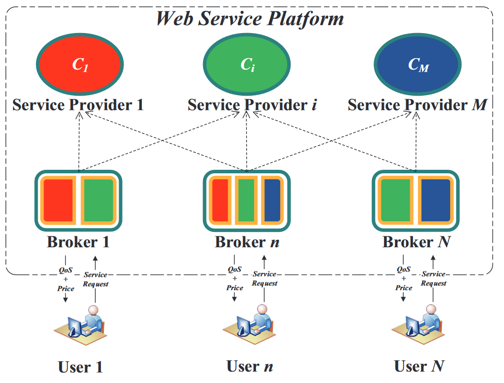
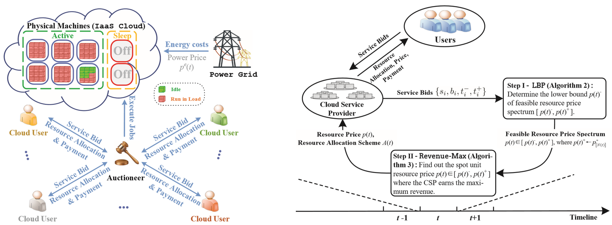
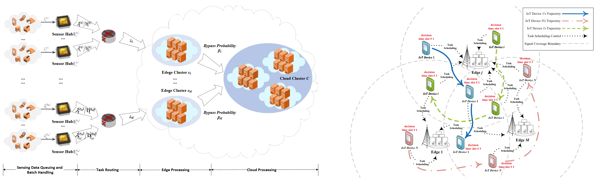

Research in a Nutshell
My research interests include
Service Selection, and Composition: QoS evaluation and optimization of workflows, Concurrent service selection based on service ecosystem
Resource Pricing, and Demand Allocation: QoS awareness, Resource management, Task scheduling, Market-oriented cloud resource pricing strategy, Demand response
Fog Computing, and Mobile Edge Computing: QoS/QoE awareness, Edge resource management, Task routing & scheduling, Multi-user/service provider gaming, Efficient/Decentralized solution
Service Selection, and Composition
The increasing momentum of service-oriented architecture has led to the emergence of divergent delivered services, where service selection is meritedly required to obtain the target service fulfilling the requirements from both users and service providers. I target to fill the research gap in the case where service requests from multiple users are performed simultaneously by a certain set of shared candidate services, although many existing works have extensively handled the issue of service selection. Meanwhile, I consider the constraints enforced on the context of service selection, such as, service placement location and contracts between users and service providers. In this sense, I propose a QoS-aware service selection scheme with constraints from a fairness aspect, with the objective of achieving max-min fairness across multiple service requests. In specific, I formulate this problem as a lexicographical maximization problem, which is yet far from trivial to deal with practically due to its inherently multi-objective and discrete nature. Given this, I develop an efficient fairness-aware algorithm for concurrent service selection, whose basic idea is to iteratively solve the single-objective subproblems by transforming them into linear programming problems. This work has been published in the IEEE ICWS 2019.
|  |
Songyuan Li, Jiwei Huang, Bo Cheng, Lizhen Cui and Yuliang Shi, ‘‘FASS: A Fairness-Aware Approach for Concurrent Service Selection with Constraints,’’ Proc. of IEEE International Conference on Web Services (ICWS), Milan, Italy, July 8-13, 2019.
Resource Pricing, and Demand Allocation
For a cloud service provider (CSP), it necessitates an emerging cloud ecosystem to both consolidate numerous cloud users and earn great revenue from users, further gaining its market share and achieving profitablity. Therefore, I design a price-incentive resource auction mechanism in cloud environment. In response to the cloud resource price, each user synthesizes her bidding budget and QoS requirement, and purchases cloud resources according to her resource demand in a strategic manner. The CSP, meanwhile, can regulate the resource demands of users through conducting a market-oriented pricing strategy, against too low prices to cover the operational costs or too high prices resulting in user churn. My proposed price-incentive resource auction mechanism targets to either maximize the CSP's service revenue, or stimulate maximum users willing to purchase cloud resources, on the premise of a minimum profit rate guaranteed for the CSP. It is also expected to provide budge balance and truthfulness guarantee, and satisfy the envy-freeness. To carry out the above objectives, I define the user utility function reflecting the complicated user interest, and formulate our resource pricing and auction problem as a BP problem. Regarding the NP-hardness of optimization problem and the non-convexity of user utility, I present the counterpart computational-efficient heuristic algorithm. The above work is presented in two research papers differentially standing in the place of cloud users or CSP, which are under review and respectively considered for acceptance in the IEEE Transactions on Network and Service Management (TNSM, 1st-round review decision received), and the IEEE Transactions on Network Science and Enginerring (TNSE, to be submitted).
|  |
Songyuan Li, Jiwei Huang, and Bo Cheng, ‘‘Resource Pricing and Demand Allocation for Revenue Maximization in IaaS Clouds: A Market-Oriented Approach,’’ IEEE Transactions on Network Science and Engineering, to be submitted.
Songyuan Li, Jiwei Huang, and Bo Cheng, ‘‘A Price-Incentive Resource Auction Mechanism Balancing the Interests Between Users and Cloud Service Provider,’’ IEEE Transactions on Network and Service Management, under review (1st-round decision on major revison received).
Fog Computing, and Mobile Edge Computing
With the increasing prevalence of online services mounted on IoT devices, edge computing gains significant momentum over conventional cloud-centric architecture. Edge servers are geographically deployed in a distributed manner nearby IoT devices, which not only frees online services from the high hardware requirement but also sharply reduces network latency experienced by end users. Given this, I study the QoS evaluation and optimization issues with regard to the edge scenario, specifically covering the following five aspects:
Design queueing network models for QoS evaluation of IoT services in edge-cloud systems, published in the International Journal of Web and Grid Services (IJWGS).
Conduct reliability-aware QoS evaluation for recoverable IoT edge services using the modeling techniques of generalized stochastic Petri net (GSPN), presented in the IEEE SCC 2017.
Manipulate the MDP-based resource allocation and task scheduling in edge computing paradigm weighing energy costs against QoS requirements, presented in the IEEE ISPA 2017.
Study the dynamic QoS-aware task scheduling and resource management problem in mobile edge computing by designing an efficient optimization algorithm with the effective and efficient LP relaxation techniques, published in the Peer-to-Peer Networking and Applications (PPNA).
Adopt the potential game theory to solve the edge resource allocation problem with Quality of Experience (QoE) maximization in a decentralized manner, currently submitted for peer-review in the IEEE Transactions on Services Computing (TSC).
|  |
Songyuan Li, Jiwei Huang, Bo Cheng, and Junliang Chen, ‘‘QoE-DEER: A QoE-Aware Decentralized Resource Allocation Scheme for Edge Computing,’’ IEEE Transactions on Services Computing, under review.
Jiwei Huang, Songyuan Li, and Ying Chen, ‘‘Revenue-Optimal Task Scheduling and Resource Management for IoT Batch Jobs in Mobile Edge Computing,’’ Peer-to-Peer Networking and Applications, vol. 13, no. 5, pp. 1776–1787, 2020.
Jiwei Huang, Songyuan Li, Ying Chen, and Junliang Chen, ‘‘Performance Modelling and Analysis for IoT Services,’’ International Journal of Web and Grid Services, vol. 14, no. 2, pp. 146-169, 2018.
Songyuan Li, and Jiwei Huang, ‘‘Energy Efficient Resource Management and Task Scheduling for IoT Services in Edge Computing Paradigm,’’ Proc. of IEEE International Symposium on Parallel and Distributed Processing with Applications (ISPA), Guangzhou, China, December 12-15, 2017.
Songyuan Li, and Jiwei Huang, ‘‘GSPN-Based Reliability-Aware Performance Evaluation of IoT Services,’’ Proc. of IEEE International Conference on Services Computing (SCC), Honolulu, HI, USA, June 25-30, 2017.